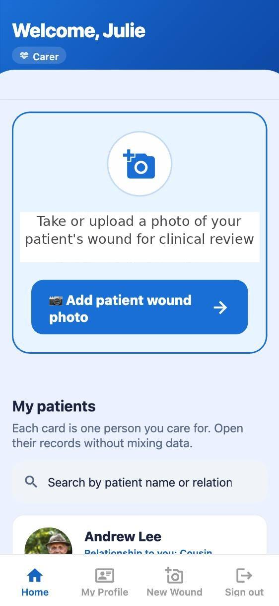
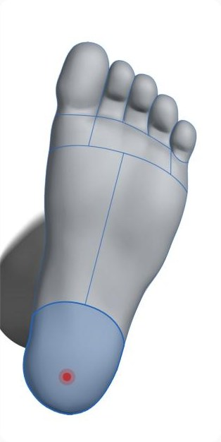

Patients & caregivers
How a wound moves through WoundEye
A patient or carer photographs the wound at home. Precision routing sends it to a certified wound specialist, who makes every clinical decision — and the result comes back to the patient and carer in the app.
Pricing
Plans for consumers and caregivers
Free to start, with an expert second look whenever you need one.
B2C
Consumers & caregivers
Manage a wound at home with plain-language guidance and an expert second look — free to start.
- Free: photo log, estimated wound measurement, one wound
- Pro $59–$99/yr: estimated wound measurement, healing trends, clinician sharing
- Caregiver $9.99/mo: multi-patient and family access
Keep exploring
More about WoundEye

How it works
From your mobile to a clinician’s answer
Capture, locate, clinical review and same-day guidance — plus the platform and integrations.
Explore
Interactive body map
Every wound gets an exact address
Tap the body, open the close-up and pin the exact spot, visit after visit.
ExploreAssureStage
The clinicians behind every answer
Certified wound specialists determine type and stage, screen for infection and set the follow-up.
ExploreBuilt for